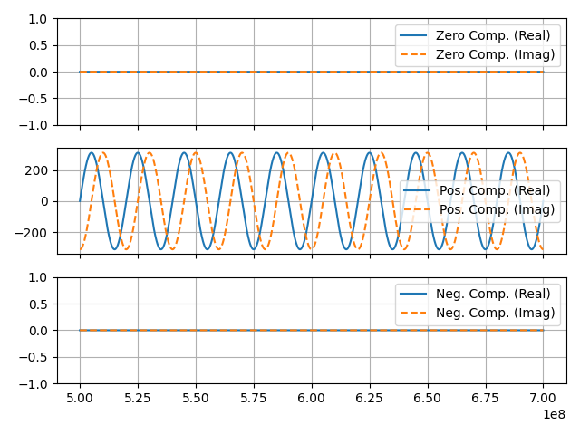
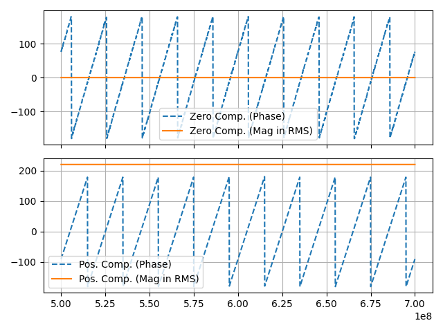

abc_to_symmetrical_components¶
- typhoon.test.transformations.abc_to_symmetrical_components(signals: DataFrame, method: str = 'Fortescue', output: str = 'Complex', mag_in_rms: bool = True, angle_in_degrees: bool = True)¶
Implements the Symmetrical transformation, also known as Fortescue transform.
The Symmetrical transformation splits the unbalanced 3-phases signals into three balanced signal with the zero, positive and negative sequences.
This function allows input of sine or complex sine values. For sine signals (not complex values), such as the three-phase generated by
typhoon.test.signals.pandas_3ph_sine(), the Hilbert Transform will be used to split the real and imaginary component of the sine function. For complex signals, the Hilbert transform is not applied, and only the symmetrical components transform is performed.The sequences (zero, positive, and negative) from the symmetrical components can be represented by complex or phasor values.
- Parameters:
signals (pandas.DataFrame) – Signals with three columns, one for every signal of the three-phase abc input. Signals can be complex or sinusoidal.
method (string) – Selects the transformation method. Allowed values are
'Fortescue', or'Power invariant'; other values will raise an exception. Default ismethod='Fortescue'output (string) –
Selects the output type. Allowed values are
'Complex', or'Phasor'; other values will raise an exception. If'Complex'is selected this function will return:A
pandas.DataFramewith three columns, one for each output signal.
The labels to select the columns are
'zero','positive'and'negative', respectively.- If
'Phasor'is selected this function will return: A
pandas.DataFramewith six columns, one for each symmetrical component (magnitude and phase).
- The labels to select the columns are, respectively:
"zero_mag": Magnitude of Zero Component"zero_phase": Phase of Zero Component"pos_mag": Magnitude of Positive Component"pos_phase": Phase of Positive Component"neg_mag": Magnitude of Negative Component"neg_phase": Phase of Negative Component
Default is
output='Complex'.mag_in_rms (bool) – If this option is
Trueandoutput='Phasor'the magnitude of the symmetrical components in thepandas.DataFramewill be return with values in RMS. If this option isFalse, amplitude values will be returned. Default ismag_in_rms=True.angle_in_degrees (bool) – If this option is
Trueandoutput='Phasor'the angle of the symmetrical components in thepandas.DataFramewill be return with values in degrees. If this option isFalse, values will be returned in radians. Default isangle_in_degrees=True.
- Returns:
DataFrame containing the symmetrical components, the columns size and label depends on the chosen
'output'.- Return type:
pandas.DataFrame
Examples
In this example the instantaneous mode of the function is used. The three-phase sines are used as
signals. These are decomposed into complex values, using Hilbert Transform, which are then used to calculate the symmetrical components.>>> from typhoon.test.transformations import abc_to_symmetrical_components >>> from typhoon.test.signals import pandas_3ph_sine >>> >>> amplitude = 311 >>> frequency = 50 >>> duration = 1 >>> Ts = 1e-4 >>> >>> signals = pandas_3ph_sine(amplitude, frequency, duration, Ts) >>> >>> zpn_fortescue = abc_to_symmetrical_components(signals) # Implicit method = "Fortescue" >>> zpn_power_inv = abc_to_symmetrical_components(signals, method="Power invariant")
The
zpn_fortescueandzpn_power_invwill both bepandas.DataFramewith three columns ofcomplex:"zero"with the balanced zero components,"positive"with the balanced positive components,"negative"with the balanced negative components
The
zpn_fortescuecomponents are shown in the plot:
And to get the symmetrical components as magnitude and phase:
>>> zpn_fortescue_phasor = abc_to_symmetrical_components( >>> signals, output="Phasor" >>> ) # Implicit method = "Fortescue"
The
zpn_fortescue_phasorzero and positive components are shown in the plot: